A PRIVATE COLLECTION
For the girl who somehow became my everything.
Curated for one visitor.
THE MUSEUM OF MY JAAN
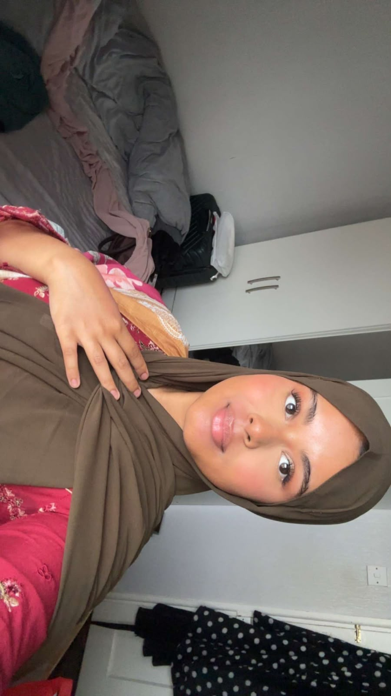
CHAPTER ONE
For the girl who somehow became my everything.
# The Museum of My Jaan *For the girl who somehow became my everything.* Jaan, I don't really know how to start this because there is honestly too much I want to say and I know I will probably still forget half of it. We've been through a lot. More than I ever thought we would. We've had beautiful days, stupid fights, distance, tears, moments where I didn't know what was going to happen to us, and moments where I just wanted to forget everything and hold you instead. And yeah, you've hurt me too. I won't pretend you haven't. There are things between us that still hurt when I think about them. But somehow, even after everything, when I look at you, I still see my jaan. My jaanu. My aloomoni. My goolo moolo. The girl I fell in love with. I don't know if love is supposed to be this complicated. Maybe it isn't. Maybe we're just two imperfect people trying to figure each other out while being miles apart. But I know one thing. I still love being with you. I love our calls. I love seeing your face on my screen. I love hearing your voice, even when we're literally talking about the most random bullshit. I love the little things you do that you probably don't even notice. And sometimes I just sit there looking at you and think, How the hell did I get this lucky? So I made this. Not because a website could ever explain what you mean to me. It can't. I made it because there are so many things about you that I don't say enough. So for a little while, jaan... forget everything else. Come inside. This is my little museum for you. Every room has something I love about you. Every picture has a memory. Every promise has a piece of my heart. And every little stupid thing in here is just another way of saying the same thing... **I love you, my noori ayni.** Welcome home, jaanu. ❤️
CHAPTER TWO
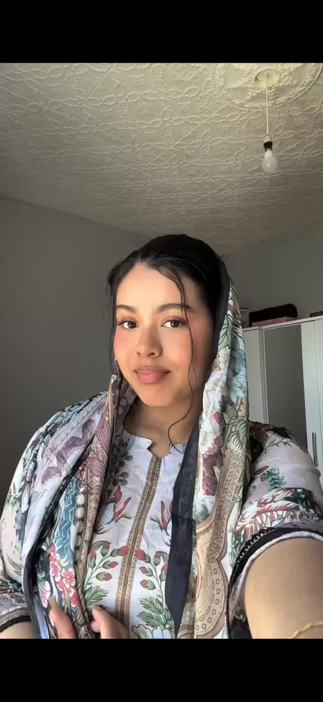
There are some things I genuinely don't know how to explain about you. Like your eyes. Jaan, seriously... your eyes are not normal. Sometimes I'm looking at you on a video call and I completely forget what we were talking about because I'm just looking at your eyes. There is something about them that I can't explain properly. They're so soft and pretty and somehow they can look innocent, beautiful, calm, and dangerous all at the same time. 😭 And your face... I swear, Allah swt. really took His time with you. Your eyes, your nose, your lips, the shape of your face, the way your smile changes your whole expression... everything just fits you so perfectly. I can look at you from a hundred different angles and somehow I still find another reason to stare. And your lips, jaanu... I don't even know what to say about them without sounding like a complete idiot, so I'll just say this they suit you way too perfectly. The way you smile, the way you talk, the little expressions you make without even realizing you're making them... I notice all of it. And your nose. 😭 Yes, I'm actually sitting here complimenting your nose because apparently I have reached that level of obsessed with you. But that's the thing. It's not just one feature. It's you as a whole.
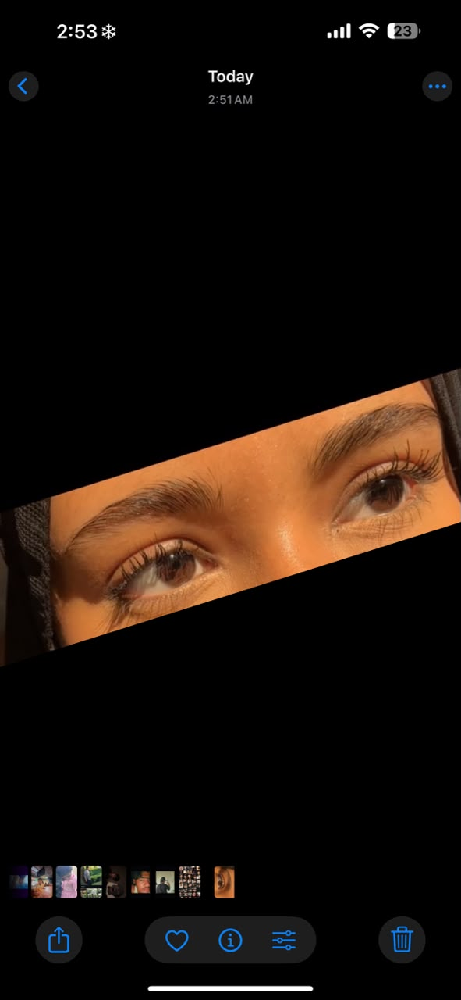
The way you look when you're dressed up. The way you look when you haven't even tried. The way your face looks when you're laughing. The way you look when you're sleepy. The way you look when you're annoyed with me. The way you look when you're pretending you're not smiling. The way you look when you're just being my jaan. I don't think you understand how beautiful you are to me. And sometimes, honestly, I don't even know what to do with that feeling. There have been moments where you've shown me yourself and I've just sat there thinking, how can one person actually be this pretty? And I mean this seriously... Sometimes your beauty genuinely overwhelms me. Like I'll look at you and instead of saying something smooth or romantic, I just get emotional. I don't even know why. I just feel this weird mixture of love, happiness, disbelief and gratitude all at once. You make me wonder how the same person can be so beautiful and still be the person I get to call my jaan.
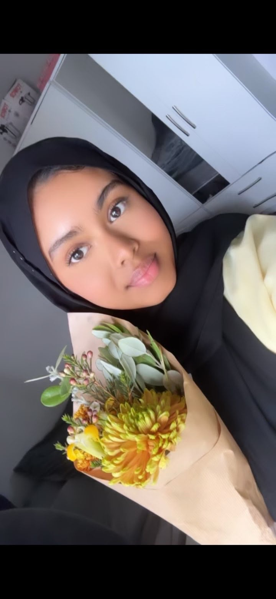
And no, I'm not only talking about your face. I love the way you carry yourself. I love your femininity. I love your body, the way you look, the way your clothes sit on you, the little details about you that make you you. I could probably write an entire stupid chapter just about how attractive I find you, but honestly, I don't want your beauty to be reduced to your body. Because that's not what makes you beautiful to me. Your beauty is in everything.
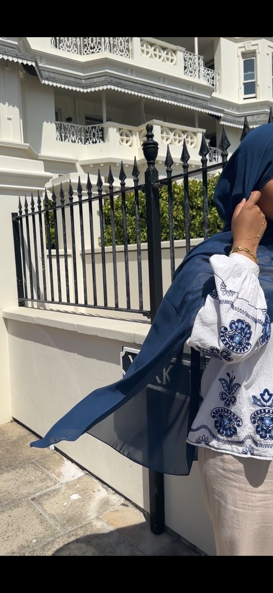
It's in your eyes. It's in your smile. It's in your voice. It's in your expressions. It's in the way you laugh. It's in the way you look at me. It's in the way you can make me miss you even while I'm literally looking at you through my screen. And maybe that's why I love looking at your pictures so much. Because every picture somehow catches a different version of you. And somehow... I love every single one. My jaan. My jaanu. My aloomoni. My noori ayni. My kuchu puchu. My goolo moolo. My beautiful girl. My heart. My everything.
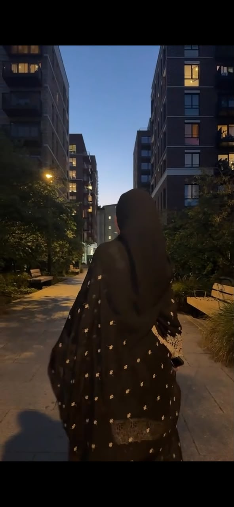
I don't care how many times I've seen your face. I don't think I'll ever get used to it. Because every time I see you again, there's always that little moment in my head where I'm just like... damn. That's my girl. And then I sit there smiling like an idiot. Maybe that's what beauty is to me now. Not some perfect face. Not some perfect body. Not looking like somebody from a magazine. It's you. It's the way I feel when I see you. It's the way my heart reacts before my brain even gets the chance to say anything. And if I could show you yourself through my eyes for just five minutes... I genuinely think you'd finally understand why I call you beautiful so much. Because I don't see what yous see in the mirror. I see my jaan. And to me... she's beautiful in a way I still haven't found the right words for. Wallahi, jaan. I really haven't.
CHAPTER THREE
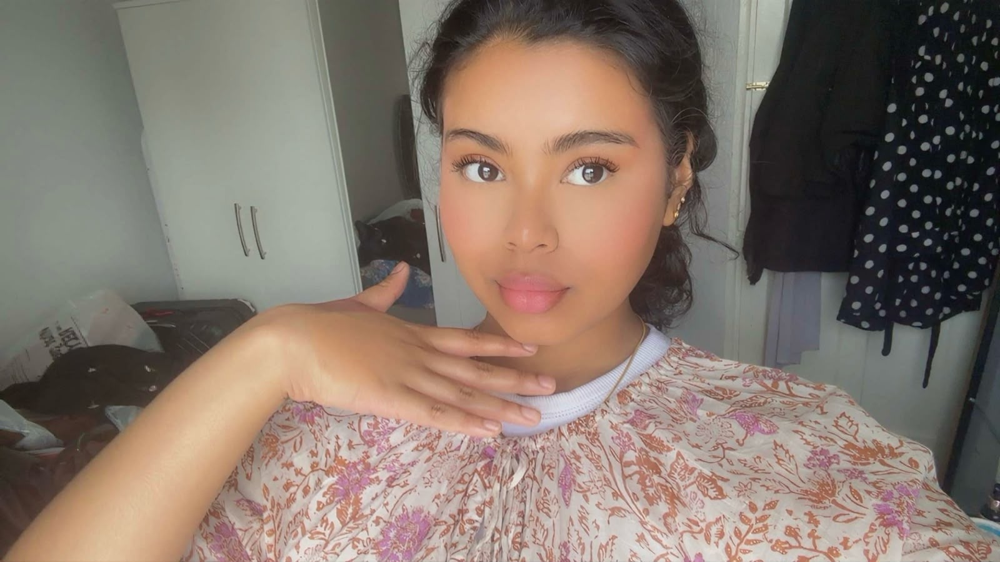
[Chapter 3 text — the things you don't realize I love. Her personality, her humor, her sleepy side, her angry side, her caring side. Replace this paragraph.]
That's my girl.
The Things You Don't Realize I Love You know what I think is funny, jaanu? I don't think you actually realize how many little things you do that make me love you even more. You probably think it's just normal. You probably don't even notice half of it. But I notice. I notice when you're happy and suddenly you start doing your stupid little things. 😂 You kiss me through the phone like somehow I can actually feel it through the screen, and then we'll start doing some random stupid thing and end up laughing so hard that neither of us can even explain what we're laughing about anymore. And then there's the legendary **"dong."** I don't even know how we got here with that word, but somehow you say it and we're both finished. 😭 Sometimes I genuinely think my life would never get boring if I had you around forever. Because you're so damn funny. You tease me. You annoy me on purpose. You ask me the most ridiculous questions like: *"Am I funny?"* *"Am I beautiful?"* *"Am I your shundori?"* And jaan... you already know the answer. But you still want me to say it. So I'll say it again. Yes. You're funny. Yes. You're beautiful. Yes. You're my shundory. And yes... you're my goolo moolo too. And then there are those random moments when you suddenly appear and go: **"Save me. Me me me me, save meee."** And I swear sometimes you drive me completely crazy. But the funny part? Inside, I'm smiling like an idiot. Because that's you. That's my girl. And I wouldn't trade those stupid little moments for anything. --- I love your sleepy version too. Actually... I don't even know what to call your sleepy version. You're basically drunk without drinking anything. 😭 You say the cutest things, your brain is somewhere on another planet, and somehow you can go from *"Jaanu I love you my baby"* to completely passing out like nothing happened. And honestly? I love it. I love seeing that side of you that only comes out when you're completely comfortable. There's something really special about being trusted enough to see someone's unfiltered version. The sleepy you. The silly you. The annoyed you. The happy you. The emotional you. The completely random you. I love all of them. Not just the version that looks pretty in pictures. **You.** --- And then there's your angry side. Wallahi, jaan, sometimes when you're really angry, I don't even know what to do. 😭 Not because I'm scared of you. I'm scared because I know something happened that made **my wife feel that way.** And even when you're rude to me, somewhere inside I'm still thinking about what's hurting you. Because I've seen the other side of you too. The part that feels guilty afterward. The part that comes back and kisses me. The part that realizes when you've gone too far and doesn't just pretend nothing happened. And I love that about you. You're not perfect. Neither am I. We're both going to have moments where we're angry, stupid, emotional, stubborn or just completely impossible. But I don't love you only when you're easy to love. I love you when you're happy. I love you when you're upset. I love you when you're annoying me. I love you when you're being dramatic. I love you when you're quiet. I love you when you're completely lost in your own thoughts. You're still my jaan in every version. --- And you know what else I love? The way you take care of me. When I'm sad. When I'm crying. When life feels like too much. You have this way of coming to me and making everything feel a little less heavy. You tell me it's okay. You comfort me. You treat me so gently sometimes that I genuinely feel like I'm being looked after by my own mother. And maybe you don't understand how much that means to me. Because there are things I carry that I don't always know how to explain. And when you just stay there with me, listen to me, comfort me, or even just stay on the call... that's not "nothing." That's everything. You might think you're just sitting on a video call with me. I'm thinking: **This girl is taking care of my heart.** --- And I love that you don't always realize how much your presence means to me. You could literally be doing your own work. You're busy. You're focused on something else. And I'm just sitting there on the call, watching you do your thing. You might think we're doing nothing. But I'm sitting there thinking: *"Look at my wife."* That's enough for me. I don't always need some huge romantic moment. Sometimes I just want to be there. With you. Even if you're doing your own thing and I'm doing mine. Just knowing you're there makes the day feel different. That's one of the weirdest things about loving someone. Sometimes they don't even have to do anything. **Their presence is enough.** --- And your aesthetic obsession. 😭 Oh my God. You see one pretty picture on Pinterest and suddenly: **"USSSS."** And there I am looking at the picture like... *"Okay jaan, yes. Us."* 😂 But honestly? I love that about you. I love how you notice beautiful little things. I love how your mind works. You see something pretty and immediately imagine us in it. And every time you do that, it makes me feel like you're building little dreams with me without even realizing it. And there's one more thing about you that I genuinely admire, jaan. Your modesty. In a time where it feels like everyone is trying to show more and more of themselves, you still choose to keep certain parts of yourself private. And I really respect that about you. I love the way you dress too. You somehow manage to be so elegant without having to do too much. Your outfits, your colours, the way you put everything together... you have this whole aesthetic about you that is just so you. And honestly, I love that your beauty doesn't need you to show everything. Sometimes you can be completely covered, dressed so modestly, and I'm still sitting there thinking: "How is my wife this pretty?" 😭 That's what I love about you, jaanu. You don't have to sacrifice your modesty to look beautiful. You don't have to follow every trend just because everyone else is doing it. You have your own way of being beautiful. And I respect that so much. I think that's one of the things that makes your beauty different to me. It's not just about how you look. It's about the way you carry yourself too. MashaAllah, my jaan. You're beautiful, you're elegant, you're modest, and somehow you still have that little crazy girl inside you who sends me a Pinterest picture and screams "USSSS" five seconds later. 😂 That's my favourite combination. My beautiful girl with a beautiful heart and her own beautiful way of carrying herself. I love your little jealous moments too. Not because I want you to feel jealous. But because sometimes I see that little side of you and think: *"Yeah... she really does care about me."* And at the same time, you still trust me. You can be jealous and still understand me. You can be annoyed and still love me. You can question me and still believe in me. That balance means more to me than you know. --- But jaan... One of the biggest things I love about you isn't something you do for me. It's the woman you are. You're strong. Like genuinely strong. Sometimes I look at everything you're dealing with and wonder how you keep going. You carry things. You handle things. You look after people. You worry about your family. You care about your friends. You care about me. And somehow you still find the energy to laugh, make stupid jokes, send me pretty pictures, annoy me, and ask me if you're beautiful. You are. But you're also a warrior. And I don't think you give yourself enough credit for that. I've watched you deal with things that could have broken you, and somehow you keep moving. And sometimes I look at you and think: **"If my wife can keep going through all of that, why can't I?"** You motivate me without even trying. You don't give me motivational speeches. You don't have to. I just look at you and see someone who keeps standing. And that makes me want to stand too. --- I love how intelligent you are. The way you explain things. The way you talk about people. The way you describe situations. The way your mind connects things. Sometimes you're telling me some story about someone and I'm just sitting there thinking: *"Damn... my wife is actually smart."* 😭 And I love listening to you. Even when you're telling me something I don't care about. Because I care about **you**. I could probably listen to you explain the most random thing for an hour and still enjoy it because it's coming from you. --- And there's something else I've noticed about you. You're soft. I know people might not always see that. You even tell me people are scared of you because you're honest and direct. And yeah... I believe them. 😂 But I know something they don't. I know how soft your heart actually is. I know how much you care. I know how deeply you feel. I know how much you worry about people. I know how much you want the people you love to be okay. And maybe that's one of the things I feel luckiest about. Because I get to see the version of you that not everyone gets to see. The strong girl everyone sees... and the soft girl that I know. **Both are you.** And I love both. --- I also love the way you care about your family. The way you look after people. The way you can become the person everyone depends on. Sometimes it feels like you're one of the roots holding everything together. And honestly, I admire you for that. You have this natural caring side in you that makes me think you'd be such a beautiful mother one day. Not because you're perfect. But because you care. Because you notice things. Because you protect the people you love. Because you know how to comfort someone when they're hurting. Because you have that softness underneath all that strength. And I've learned things from watching you too. You've shown me things about what it means to care for someone, to be patient, to be present, and to actually show up. --- And maybe my favorite thing is that you don't even know you're doing half of this. You think you're just being you. You're just making me laugh. You're just staying on a call. You're just sending me a picture. You're just asking me some stupid question. You're just saying *"save meee."* You're just telling me you love me. You're just being my jaan. But to me... those aren't little things. Those are the things I'm going to remember. Because when I think about why I love you, I don't only remember the big moments. I remember the stupid ones. The random ones. The boring ones. The sleepy ones. The moments where absolutely nothing happened. Because somehow... **nothing happening with you still feels like something.** And that's how I know it's you. I don't just love the excitement. I love the ordinary. I love the girl who makes me laugh. I love the girl who takes care of me. I love the girl who gets angry. I love the girl who gets jealous. I love the girl who falls asleep on calls. I love the girl who sends me Pinterest pictures and reels and says *"USSS."* I love the girl who asks if she's beautiful even though she already knows what I'm going to say. I love the girl who can be the strongest person in the room and then turn around and be the softest person I've ever known. I love my jaan. My jaanu. My aloomoni. My noori ayni. My kuchu puchu. My goolo moolo. My shundory. My everything. my wife And honestly... I think that's the part you don't realize. You don't have to do something huge to make me love you. You just have to be you. And somehow... that's always been more than enough for me.
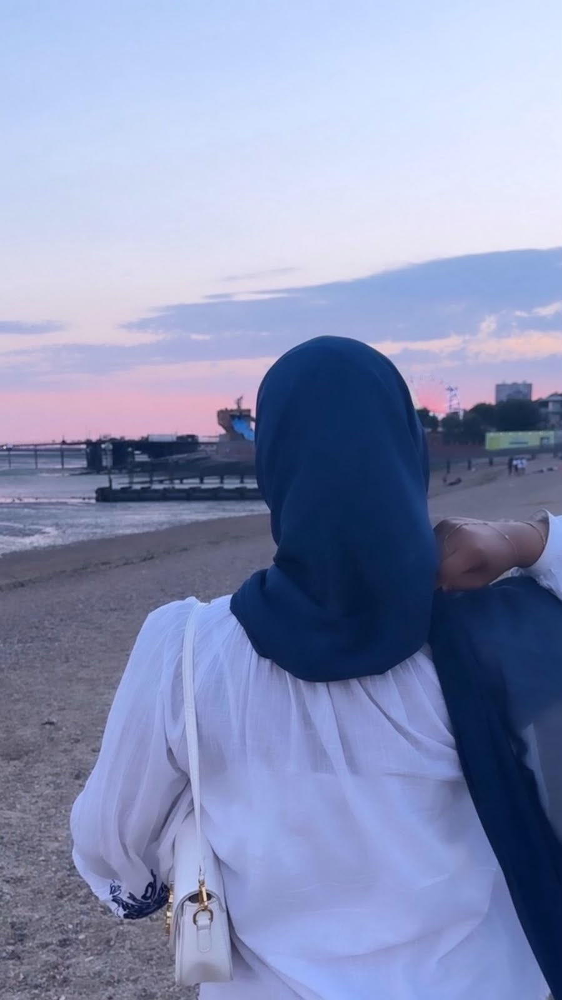
CHAPTER FOUR
I love that you always want to become better. You don't just sit there and think you're already enough. You look at yourself, you think about the things you could improve, and you actually try. And I love watching that. I love that you have goals for yourself. I love that you want to grow, learn, become stronger, become better at the things you care about. Even when things aren't perfect, you still try to move forward. And honestly, jaan, that's one of the things that makes me proud of you. Because I don't need you to be perfect. I never did. I just want you to keep being you and keep growing into the woman you want to become. And something else that means so much to me is that, after everything we've been through, you still want me. You still want me beside you. You still want my calls. You still want my stupid jokes. You still want me to annoy you. You still want me to be the person you tell things to. You still want your jaanu. And I don't take that for granted. I know we've had moments where things between us have been really hard. I know we've hurt each other. I know our story isn't some perfect little love story where everything has always gone smoothly. But when you still choose to reach for me after all of that... it means something to me. I don't want the version of us that only exists when everything is easy. I want the version of us that learns. The version that grows. The version that makes mistakes and actually tries to do better. The version that doesn't give up just because things get difficult. And maybe that's another reason I love you so much. Because I don't just see the girl you are right now. I see the woman you're becoming. And wallahi, jaan, I want to be there to see her become everything she wants to be. I want to watch you grow. I want to grow with you. I want us to become better for each other, not because either of us has to be perfect, but because what we have is worth taking care of. And if you ever forget how proud I am of you... come back here. Read this again. Your jaanu is proud of you. ❤️
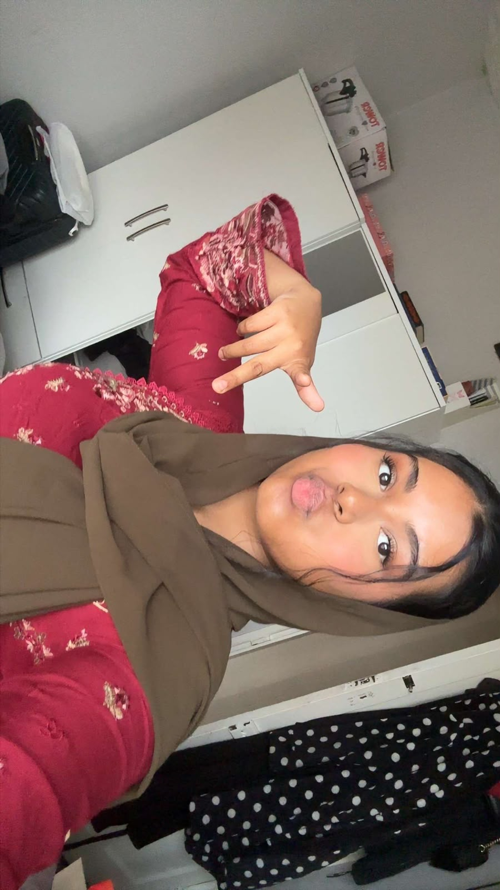
You.
[Final paragraph of Chapter 4.]
CHAPTER FIVE
Hey, my jaanu. My wife. After everything we've been through, I know we're not okay right now. We've both made mistakes. We've both said things we probably wish we could take back. We've hurt each other in ways I wish never happened. And I know our relationship has become so complicated sometimes that even we probably don't know how we ended up here. But there is one thing I really, genuinely want you to know. I love you. And I can proudly say that. I don't know what my life would look like if I wasn't your husband, your bestie, your person. Maybe someone else would come into your life one day. Maybe someone else would love you. Maybe someone else would stand beside you. I don't know. But I do know what I'm doing. I'm giving you my 100. And honestly, jaan, sometimes even 100 doesn't feel enough to me. Because I don't feel like I've reached the end of all the ways I can love you. I've already tried to love you in every way I know. Now I'm trying to discover more ways. More ways to understand you. More ways to make you feel safe with me. More ways to make you laugh. More ways to support you. More ways to be there when life gets heavy. More ways to be your husband, your best friend, your safe place and your jaanu. And the funny thing is, I don't think there is an end to that. I think I'll keep finding new ways because loving someone isn't something you finish. You keep learning them. You keep choosing them. You keep trying to understand them better. And that's what I want to do with you. Jaan, there's something else I need you to understand. When you're going through problems with your family, I don't look at it and think, “That's my wife's family problem.” No. I look at it and think, “My jaan is going through something. How do I help her?” That's genuinely how my mind works. When something hurts you, it matters to me. When something makes you happy, I'm happy too. When you're struggling, I don't want to stand outside of it and watch you deal with it alone. I want to be beside you. Even when it's difficult. Even when I don't know the perfect answer. Even when all I can do is listen. And when I pray for your family, I don't pray for them like they're strangers to me. I ask Allah to guide them, to make things easier for them, to bring peace into your home, and to make things better for you. Because your problems don't suddenly become unimportant just because they're not happening in my house. You're my family. So when something hurts you, I care. When you're happy, that's my happiness too. And I know my own family hasn't always made things easy for me either. You know that. But sometimes I look at you and think about something completely different. I think about the life we could have one day. I think about us finally being together. I think about all the things we've talked about. I think about your dreams. I think about Musa. I think about you wanting me to be his baba. I think about the home we used to imagine. And I think: One day, in sha Allah, we're going to look back at all of this and wonder how we survived it. That's the future I keep seeing in my head. Not because I think everything will magically become perfect. But because I want to build something better with you. And jaanu... there's something that has hurt me deeply. When I think about the dreams we've talked about, the life we've imagined, the love we've shared, I sometimes genuinely ask myself: Why are we letting someone else become part of a story that we were supposed to be writing together? I don't say that to attack you. I say it because it hurts. You gave me dreams too. You made me imagine a life with you. You made me imagine being your husband, being Musa's baba, coming home to you, annoying you, making you laugh, growing old with you. Those things became real inside my head. So when our relationship gets hurt by someone else, it doesn't feel like I'm just losing an argument. It feels like I'm watching something we dreamed about getting damaged. And jaan... I don't want that. I don't want you to choose me because you think I have the best offer. I don't want you to choose me because you're scared of being alone. I don't want you to stay because you feel guilty. I want you to choose me because somewhere inside you, you still believe: “This is my person.” Because I still feel that way about you. We have something between us that I can't easily explain. Our chemistry. Our intimacy. Our stupid jokes. Our video calls. Our random conversations. The way we can spend hours together and somehow still want more time. The way you can annoy me and make me laugh five minutes later. The way you can make me feel like the happiest idiot alive. That's ours. And I don't want us to throw it away without trying to understand what happened to us first. And please, jaan... Don't hide your problems from me because you think you have to handle everything alone. If something is hurting you, tell me. If you're scared, tell me. If you're confused, tell me. If you think something is too embarrassing to tell me, tell me anyway. If you're struggling, let me know. Don't sit there thinking, “Saim won't understand.” Let me try. Let me be there. Let me help. I don't want to only be the person you call when everything is good. I want to be your person when everything is falling apart too. And I want you to see me like that. Your husband. Your best friend. Your jaanu. Your annoying person. The person you can tell anything to. And I know you have your own insecurities about me. Maybe sometimes you think I'm too pure for you. Maybe sometimes you think you can't match me. Maybe sometimes you wonder whether you're enough for me. Jaan... I don't want to prove that to you with words anymore. I want to prove it with my actions. I want to make you feel safe instead of just telling you that you're safe. I want to show you that you don't have to compete with some imaginary perfect version of a wife. You're you. And I'm choosing you. At the same time, I have my own insecurities too. And I hope you can help me with them the same way I want to help you with yours. I don't want us to keep hurting each other just because we're both scared. I don't want to keep bringing old things into new arguments just to defend ourselves. I don't want every disagreement to become a courtroom where we're both trying to prove who hurt who more. I don't want to win against you. I want to win with you. So, jaanu... I'm not asking for a perfect relationship. I'm asking for a real one. One where we can admit when we're wrong. One where we can say when something hurts. One where we don't hide things because we're afraid of the reaction. One where we don't use the past as a weapon. One where we actually learn from what happened. One where we both try. One where I can look at you and think: “That's my wife. We're going to figure this out.” I don't want to erase our past. I just don't want our past to decide our entire future. I want us to start again. Not by pretending nothing happened. But by understanding what happened, learning from it, and deciding that we're going to do better. And I swear, my heart... I'm still here. I'm still trying. I'm still learning how to love you better. And I'm still hoping that one day, when you look back at this chapter of our lives, you won't remember only the things that went wrong. You'll remember that we tried to make them right. I love you, my jaan. Please try to understand me too.
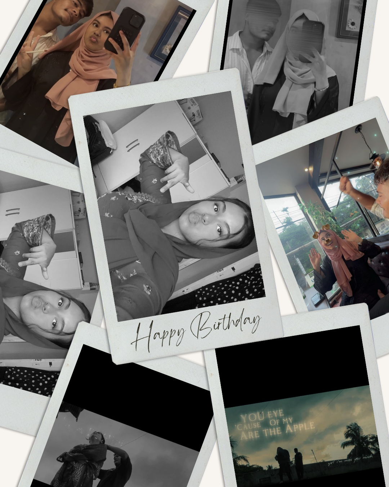
I still want you.
CHAPTER SIX · THE FINAL ROOM
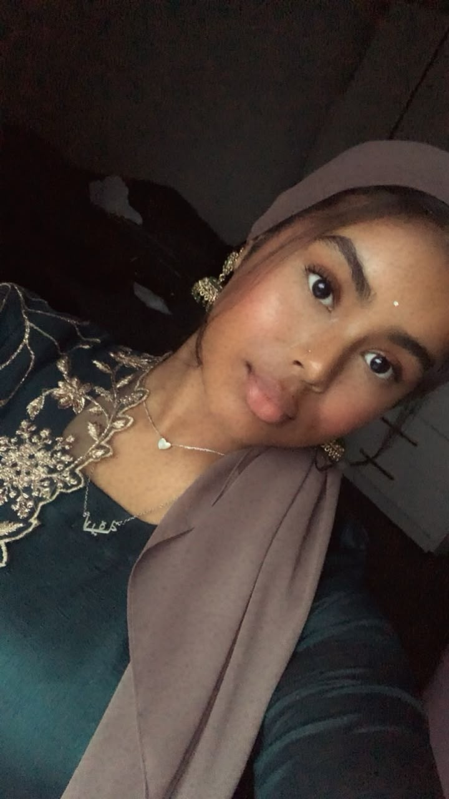
Hey my jaanu... If you've reached this room, then you've already seen everything I wanted you to see. You've seen why I think you're beautiful. You've seen the stupid little things you do that make me laugh. You've seen the things about you that you probably don't even realize I notice. You've seen the things I love about your heart. You've seen the things I want for us. And now I just want to answer one question. Why? Why did I make all of this? Why am I putting this much effort into you? Why, after everything we've been through, am I still here? Why don't I hate you? Why do I still call you my jaan? Why do I still look at you and think, that's my girl? Why am I still trying? The answer is actually very simple. It's you. It's always been you. Not because I think you're perfect. You're not. I'm not either. We've both messed up. We've both hurt each other. There are things that happened between us that I wish never happened. And I'm not going to pretend those things didn't hurt me. They did. But somehow, when I take all of that away and ask myself what I actually want... I still want you. That's the truth. I still want my jaan. I still want my jaanu. I still want my aloomoni. I still want my noori ayni. I still want my kuchu puchu and my goolo moolo. I still want the girl who kisses me through a phone. I still want the girl who randomly screams "USSSS" when she sees something aesthetic. I still want the girl who asks me if she's beautiful even though she already knows I'm going to say yes. I still want the girl who makes me laugh until my stomach hurts. I still want the girl who falls asleep on calls and becomes completely drunk without drinking anything. 😂 I still want the girl who gets angry, then feels bad, then comes back and kisses me. I still want the girl who takes care of me when I'm falling apart. I still want the girl who can be strong enough to carry everyone and somehow still have the softest heart I've ever seen. I still want the girl whose face can literally distract me from whatever I was saying. I still want the girl who makes me sit there during a video call thinking, "How the hell is my wife this beautiful?" I still want you. And that's why I'm not trying to punish you with this. I'm not making this so you feel guilty. I'm not making this so you feel like you owe me something. I'm making it because I wanted you to see what I see when I look at you. I wanted you to know that you're not just someone I love because you're beautiful. I love your mind. I love your heart. I love your stupidness. I love your strength. I love your softness. I love your maturity. I love your weird little habits. I love your voice. I love your laugh. I love your sleepy brain. I love your serious side. I love the way you care about people. I love the way you keep trying to improve yourself. I love the woman you're becoming. And I love the life I imagine when I imagine you being in it. That's why I give you this much effort. Because if I didn't want you, I wouldn't be trying to find more ways to love you. I wouldn't spend all this time thinking about how to make you smile. I wouldn't remember all these little things. I wouldn't make a whole damn museum just so one girl could sit there with her iPad and read about herself. 😂 But I did. Because you're important to me. You are. And jaan... I don't know what the future will look like. I can't promise that we'll never fight. I can't promise that we'll never hurt each other again. I can't promise that everything will suddenly become easy. But I can tell you what I want. I want us to become better. I want us to learn how to love each other without destroying each other. I want us to be honest. I want us to talk instead of hiding things. I want us to protect what we have instead of testing how much it can survive. I want to be able to look at you years from now and remember this time as the time we almost lost ourselves but decided to find each other again. And maybe that's why I don't hate you. Because when I look at you, I don't only see the things that hurt me. I see the girl who stayed on calls with me. I see the girl who comforted me when I cried. I see the girl who made me laugh when I didn't want to smile. I see the girl who dreamed about a life with me. I see the girl who wanted me to be the baba of Musa. I see the girl who made me imagine a home. I see the girl who made me believe that maybe I could have that kind of love too. So no... I'm not going to pretend nothing happened. But I'm also not going to let the worst moments of our relationship erase every beautiful thing that came before them. You are more than your worst mistake to me. And I'm more than the person you hurt. We're two people who messed up and still somehow found enough love inside ourselves to want to try again. That's what I want. Not a perfect love story. Our love story. The messy one. The stupid one. The beautiful one. The one where we learn. The one where we grow. The one where we forgive without forgetting the lessons. The one where we finally learn how to make each other feel safe. And if one day you ever wonder why I did all of this... Why I wrote all these words. Why I collected all these pictures. Why I remembered all these tiny things. Why I still tried so hard. Why I didn't choose hate. Why I still call you my wife. Why I still look at you like you're the prettiest girl I've ever seen. Why I still want you. Come back to this room. And remember the answer. It's because of you. Not because you're perfect. Not because our relationship has always been easy. Not because I forgot what happened. Because after everything, when I ask myself who I want... I still say you. My jaan. My jaanu. My aloomoni. My heart. My noori ayni. My everything. You. And if Allah allows us to keep walking together, then in sha Allah one day we'll look back at this little museum and laugh about how dramatic your husband was. 😂 Maybe we'll sit beside each other instead of looking at each other through a screen. Maybe I'll finally get to annoy you in person. Maybe you'll finally get tired of hearing me say how beautiful you are. And maybe we'll look at all these pictures and realize that they were only the beginning. So this is the last room, jaan. But hopefully... not the end of our story. I love you. Always your jaanu. ❤️
It's because of you.
PRIVATE COLLECTION
Every photograph, kept here for you.